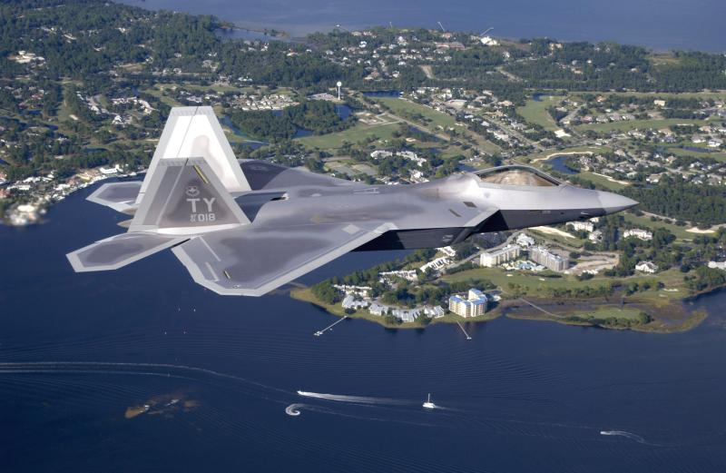

Lockheed Martin F-22 Raptor
| Descrição | |
|---|---|
| Função: | Superioridade Aérea |
| Local de Origem: | Estados Unidos da America |
| Fabricante: |
Lockheed Martin Aeronautics
Boeing Defense, Space & Security |
| Primeiro Voo: | 7 de Setembro de 1997 |
| Introduzido em: | 15 de Dezembro de 2005 |
| Status: | Em Serviço |
| Utilziadores: | Estados Unidos |
| Produzido: | 1996 a 2011 |
| Caractersiticas Gerais | |
| Tripulação: | 1 |
| Comprimento: | 18.92m |
| Altura: | 5.08m |
| Envergadura das Asas: | 13.56m |
| Area das Asas: | 78.04m² |
| Peso Vazio: | 19.700kg |
| Peso Bruto: | 29.410kg |
| Peso Máximo de Decolagem: | 38.000kg |
| Capacidade de Combustivel: | 8.200kg Internamente
12.200kg com 2 Tanques Externos |
| Performace | |
| Motores: | 2 x Pratt & Whitney F119-PW-100 Turbofans Afterburnig |
| Empuxo: |
|
| Velocidade Máxima: | Mach 2.25 ou 2.414km/h |
| Alcance: | 3.000km ou mais com tanques externos |
| Alcance de Combate: | 850km |
| Armamento | |
| Armas: | 1 x Canhão Rotatorio de 20mm M61A2 Vulcan de 480 Disparos |
| Baia Interna: |
Ar-Ar:
Ar-Terra:
|
| Hardpoint Externo |
|

Conhecidamente como F-22 Raptor ou Locckheed Martin/Boeing F-22 Raptor é um caça de 5° Geração americano,
desevolvido através do programa Advanced Tactical Fighter (ATF). Com o produto gerado desse programa sendo um caça de ultima geração
supersonico de superioridade aérea. Mas além de ser um caça de superioridade aérea ele pode empregar ataques ao solo, guerra eletronica
e capacidades de inteligencia de sinais. Com o F-22 sendo introduzido na Força Aérea dos Estados Unidos a (USAF) no ano de 2005.
Originalmente o plano seria a compra de 750 F-22, no entano em 2009 o plano de produções passou a ser de somente 187,
devido ao seu alto custo, com cada unidade sendo estimada em US$ 125.000.000 ou US$ 125 milhões.( Por curiosidade, se forssemos
converter o valor estimado do F-22 utilizando a cotação do dia 14/10/23, o F-22 custaria em R$ 635.087.000 ou R$ 635.087 milhões)
Um dos outros motivos para a redução do número de compra do F-22 foi a falta de missões Ar-Ar, bem como o desevolvimento de outras
plataformas mais versateis como o F-35. Além diso devido a falta de "concorrentes" para o F-22, já que devido a época
em que ele foi indroduzido não havia adversarios para ele, já que a União Sovieteica havia sido desfeita na mesma década em que ele foi feito.

Curiosidades
O F-22 possui em todo o longo periodo de vida, teve diversas aparições em diversos jogos, filmes e series, como
na serei de video games "Ace Combat", a serie de games F-22, apareceu também em divresos outros jogos como "Muv Luv Alternative" e "Muv Luv The Day Afte"r", bem como já apareceu em diversos filmes como em
Homem de Ferro 2, em Transformers e em outras sereies. Um outra curiosidade do F-22 é que sem os seus computadores ele não conseguiria levantar voo e nem se manter, por conta de suas asas serem curtas,
por conta disso atraves da utilizam de computadores avançados eles regulam e corrigem os dados de bordo para que ele possam continuar a voar.
Aparencia dele no Jogo "Muv Luv Alternative"